TECHVESTVENTURES DAILY RISK ALERTS — Emergent News Digest — Nov 25, 2026, 12:00 PM EST ALL RISK REPORTS click TVV Risk Center
TVV RESEARCH DIGEST — November 25, 2026 — 13 desks
Prioritized Risk Summary November 25, 2026
| Sections Ranked for Importance Today | |
|---|---|
| STOCKS | Nasdaq falls about 4%, matching its record Thanksgiving-eve loss; S&P 500 down 2.9% |
| DERIVATIVES | AI credit stress at records: CoreWeave bond tops 17%; Oracle, Alphabet CDS highs |
| ECONOMY | Core PCE 3.3%, GDP revised to 4.3%; December Fed hike odds at 97.8% |
| TECHNOLOGY | Nvidia 40% below its peak; Trump floats a US stake and keeps a Huang pardon open |
| GEOPOLITICS | US tells Americans to leave Iran now; Poland asks NATO to down Russian missiles |
| TERROR | Bombed towers black out southern Colombia; CIA and FinCEN systems breached |
| HEALTH | Ebola tops 11,900 confirmed cases; early flu season at 11.8% positivity |
| COMMODITY | Gold below $3,500, silver below $40; Houthis claim attack on Ras Tanura |
| AI BOOST | Microsoft outage review calls for more AI agents; Meta AI moderation a mess |
| PREDICTIONS | Bettors see 73.5% odds of an Iran ceasefire pause but no end to the blockade |
| INFRASTRUCT | Electricity prices up 5.4% in a year; storms threaten Thanksgiving travel |
| SPACE | Possible G1 storm on Thanksgiving; October sunspots far below NOAA forecast |
| QUAKES | No deadly M6+ quake; Indonesia's M5+ count nearly doubled in a year |
1. Major Geopolitical Conflict Developments
- ★ US tells Americans to leave Iran now: the US Virtual Embassy in Iran issued a Nov 24 security alert telling US citizens to leave immediately and not to travel there for any reason, citing rapidly escalating regional hostilities, including Iranian attacks on US assets in Bahrain and Kuwait and Houthi attacks in Saudi Arabia. Euronews reports the warning says hostilities could escalate fast. President Trump told the New York Post the Iran war is "funded" through January, which the Times of Israel reads as a limited window for a new operation, and said Israel's goal of toppling the regime is "probably doable" but not his main objective. US Virtual Embassy Iran · Euronews · The Times of Israel · The Jerusalem Post
- ★ Blockade bites, Tehran says it can hold out: Reuters reports Iran says it is prepared to withstand the US naval blockade and is seeking ways to curb price rises; Al Jazeera reports Iran is rationing electricity as sanctions and the blockade bite, and The National describes a debate inside Iran over whether to push tankers through the blockade. Polymarket bettors are split (see graph): 73.5% odds of a two-week US-Iran ceasefire pause by Nov 30, up from 41% a week ago, but only 15.7% that the US ends the blockade by Dec 31 (34.8% 30 days ago) and 13.5% for a senior diplomatic meeting this year. Near term, bettors expect a pause in fighting without a lifting of the blockade. Reuters · Al Jazeera · The National · Polymarket
- ★ Israel's Iran debate: former army chief Gadi Eisenkot, pushing to oust Prime Minister Netanyahu, sharpened his warnings over new strikes on Iran (The Washington Post). The Washington Post
- ★ Poland asks NATO to shoot down Russian missiles over Ukraine: after three Kh-101 missiles fell in Poland, Warsaw asked allies at a Nov 23 ambassadors' meeting to consider intercepting Russian missiles over Ukraine when they head toward NATO territory. Some allies backed discussion, but no decision was taken; it would need Ukrainian warnings and airspace access, unanimous NATO approval and SACEUR coordination, and it raises the risk of direct conflict with Russia (Interfax-Ukraine, Bloomberg). The WSJ reports a scramble to avert conflict with Russia in the Baltic. Polymarket odds that Russia invades another country by end-2027 fell to 9.5% from 18.5% a week ago (see graph); near term, bettors price escalation risk as low despite the Baltic tension. Interfax-Ukraine · Bloomberg · WSJ · Polymarket
- ★ Russia vows retaliation for refinery strikes: Putin said retaliation is "inevitable" after Ukraine hit Russian oil plants (Al Jazeera); Ukraine told him to "stop complaining" (CNBC). In Libya, two Libyan naval officers died of wounds from Ukraine's drone attack on a Russian warship near Benghazi, and the Libyan army vowed retaliation (AP via Durango Herald). The EU restricted trade with 15 more entities linked to Russia's military-industrial complex. Al Jazeera · CNBC · Durango Herald · Council of the EU
- ★ Huawei convicted: a federal jury in Brooklyn convicted Huawei and three subsidiaries on 10 of 12 counts, including bank fraud, wire fraud, money-laundering conspiracy and sanctions violations tied to concealing its Iran business from US banks, and conspiracy to steal trade secrets; it was acquitted of racketeering conspiracy and obstruction conspiracy (US Justice Department, AP). US Department of Justice · AP News
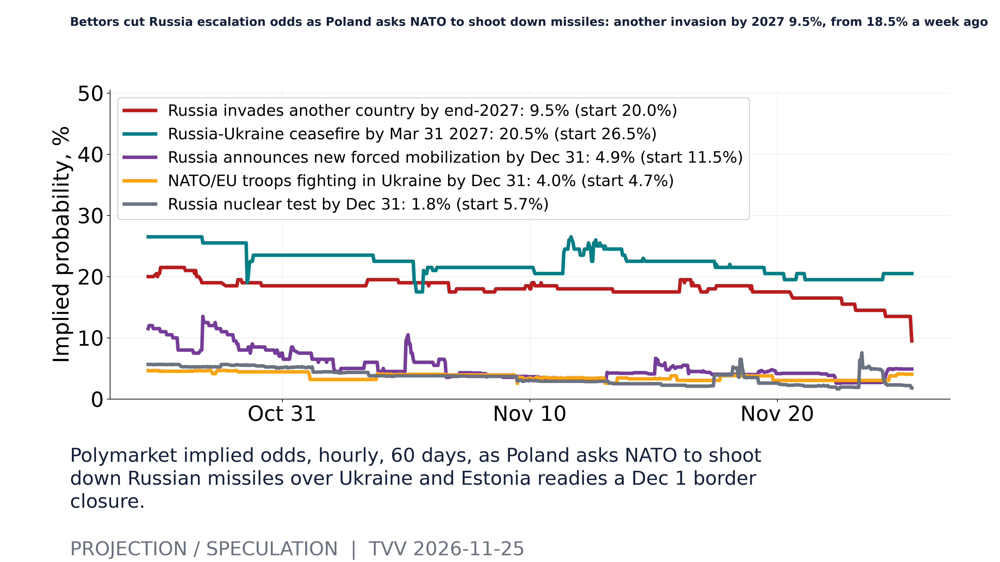
Bettors cut Russia escalation odds as Poland asks NATO to shoot down missiles: another invasion by 2027 9.5%, from 18.5% a week ago. Polymarket implied odds, hourly, 60 days, as Poland asks NATO to shoot down Russian missiles over Ukraine and Estonia readies a Dec 1 border closure. [Projection/Speculation; data as of 2026-11-25 10:40 ET] Source: polymarket.com data page
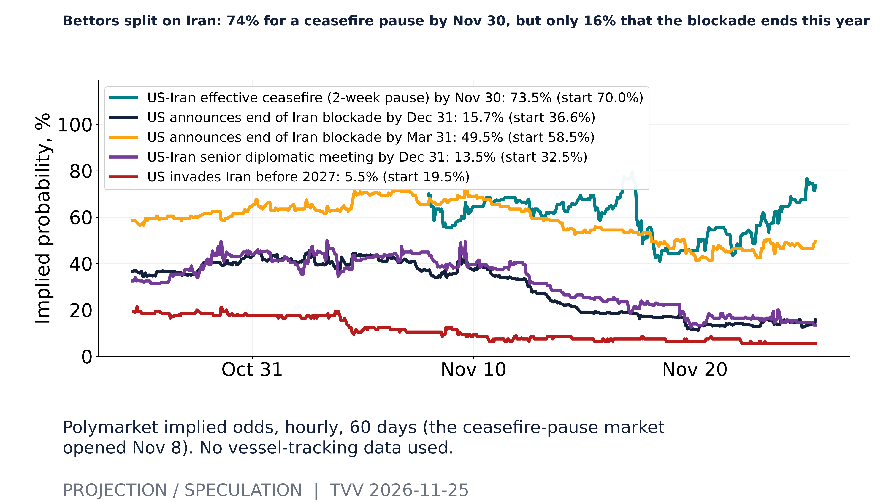
Bettors split on Iran: 74% for a ceasefire pause by Nov 30, but only 16% that the blockade ends this year. Polymarket implied odds, hourly, 60 days (the ceasefire-pause market opened Nov 8). No vessel-tracking data used. [Projection/Speculation; data as of 2026-11-25 10:40 ET] Source: polymarket.com data page
2. Major Terror / Security Incidents
- ★ Terror bombing blacks out southern Colombia: explosions toppled transmission towers in El Remolino, Taminango, northern Nariño at about 6:14-6:30 PM Tuesday, cutting the two 230 kV circuits that link the San Bernardino (Cauca) and Jamondino (Pasto) substations, the region's main tie to the national grid. Power failed across parts of Nariño, Putumayo, Cauca, Huila and Caquetá; Pasto was dark for nearly an hour. President Abelardo de la Espriella called it a terrorist attack, blamed armed groups answering the government's offensive, and ordered a special defense plan for power and gas infrastructure; investigators point to FARC dissidents (El Tiempo). XM, the grid operator, cited the fragility of a regional network already hit by recent attacks. EL PAÍS reports armed-group terror spilling into Colombia's major cities, following a Nov 24 attack that injured more than 20. El Tiempo · EL PAÍS · XM
- ★ Federal systems breached: the CIA and ODNI found a breach of an unclassified open-source intelligence analysis system; no classified information or networks were affected and the incident was reported resolved (AP, CyberScoop). Separately, Treasury's FinCEN disclosed unauthorized access to a limited subset of its systems and took some systems offline; it has not named an attacker or linked the two incidents (The Verge). AP News · CyberScoop · The Verge
- ★ Firewalls as the target: GreyNoise tracked a campaign it calls GT13 that compromised Check Point Security Management Servers at 22 organizations in 17 countries between Oct 17 and Nov 2, exploiting a SmartConsole authentication bypass (CVE-2026-16232) to steal firewall databases, credentials and internal certificate files; Check Point has released a fix (BleepingComputer, GreyNoise). CISA's known-exploited-vulnerability catalog added 30 flaws in November through Nov 25, on pace for 36 versus a 2025 monthly average of 20 (see graph); near term, the pace points to one of the busiest months since 2023. Trump blamed Minnesota's governor, not Iran, for cyberattacks on the state's water systems (ABC News), and Reuters warns retailers face rising AI-driven attacks before Black Friday, many uninsured. BleepingComputer · GreyNoise · CISA KEV · ABC News · Reuters
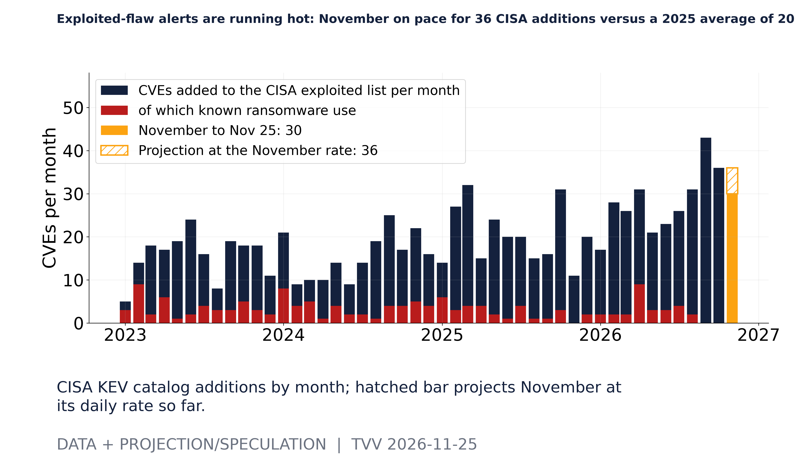
Exploited-flaw alerts are running hot: November on pace for 36 CISA additions versus a 2025 average of 20. CISA KEV catalog additions by month; hatched bar projects November at its daily rate so far. [Data + Projection/Speculation; data as of 2026-11-25] Source: cisa.gov data page
3. Earthquakes and Eruptions
- ★ No M6.0+ quake with significant casualties or damage since the last issue. USGS counts 2,027 M5+ quakes worldwide in the past 365 days versus 2,117 the year before; Indonesia nearly doubled to 256 from 139, Vanuatu to 113 from 57 and the Philippines to 147 from 99, while Russia fell to 116 from 491 as Kamchatka aftershocks faded (see graph). A M4.4 near the Colorado line was the Raton Basin's strongest since 2011 (Kiowa County Press). USGS · Kiowa County Press
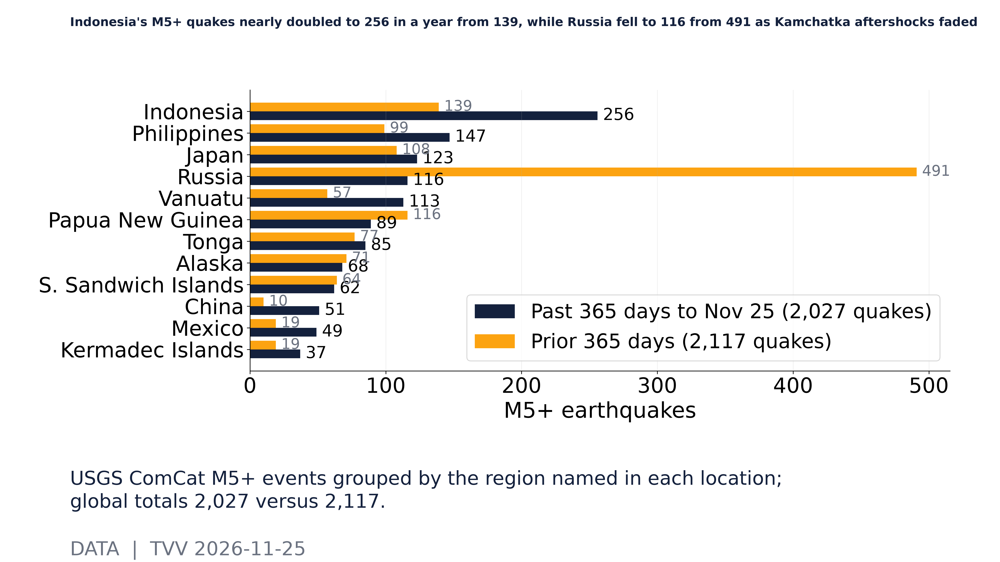
Indonesia's M5+ quakes nearly doubled to 256 in a year from 139, while Russia fell to 116 from 491 as Kamchatka aftershocks faded. USGS ComCat M5+ events grouped by the region named in each location; global totals 2,027 versus 2,117. [Data; data as of 2026-11-25] Source: earthquake.usgs.gov data page
4. Solar / Space Weather
- ★ Thanksgiving aurora watch, quiet Sun: NOAA flags a possible G1 minor storm late Nov 26 into Nov 27 from a coronal-hole high-speed stream, not a CME, and Starlust reports fast solar wind may bring northern lights to the northern US on Thanksgiving. One headline reported an M7.9 flare, but NOAA's event reports show only B-class flares on Nov 25 (strongest B6.4); treat the M7.9 report as unconfirmed. October's sunspot number was 46 versus NOAA's predicted 83 (see graph); near term, NOAA projects continued decline toward a minimum near 2030, though declining phases still produce large storms. Lawmakers pressed NASA and NOAA over space-weather coordination delays (Legis1). Long-horizon watch: pole drift and geomagnetic-excursion risk remain measured trends that no one can time; Michael's own view is 2035 at the earliest, with critical earth changes along the way. NOAA SWPC · Starlust · Legis1 · NOAA SWPC solar cycle
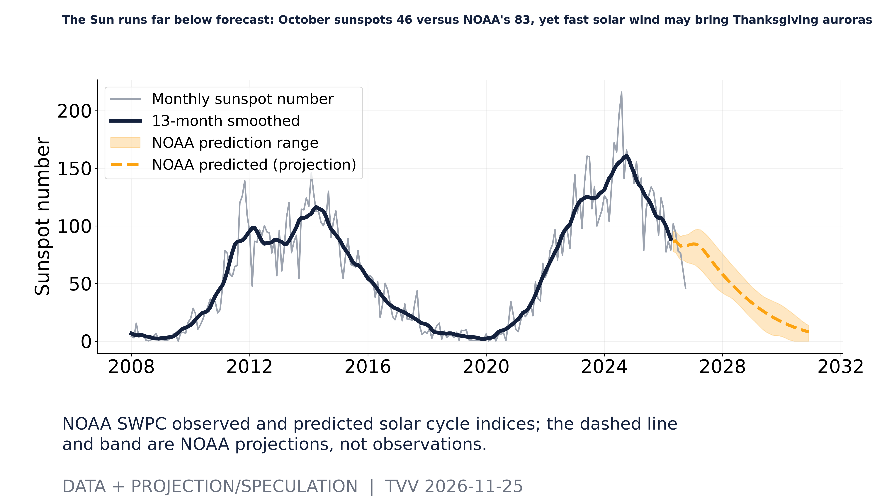
The Sun runs far below forecast: October sunspots 46 versus NOAA's 83, yet fast solar wind may bring Thanksgiving auroras. NOAA SWPC observed and predicted solar cycle indices; the dashed line and band are NOAA projections, not observations. [Data + Projection/Speculation; data as of 2026-10] Source: services.swpc.noaa.gov data page
5. Critical Infrastructure / Transportation Disruptions
- ★ Grid attacks and the power bill: beyond Colombia's bombed lines (see Terror), DTEK reports a 15-fold increase in local outages in Ukraine's Odesa region after shelling (Mezha.net). US electricity prices are up 5.4% in a year versus 4.1% for all items (BLS, see graph), as Ohio approved a gas plant for data centers despite local voter backlash (Ohio Capital Journal) and Goldman Sachs sees US natural-gas demand surging on data centers (OilPrice.com). New Mexico's attorney general is probing Lea County's $130 billion Google data-center deal (New Mexico Political Report). Mezha.net · BLS · Ohio Capital Journal · OilPrice.com · New Mexico Political Report
- ★ Thanksgiving travel squeeze: storms on both coasts threaten the busiest travel days, with the Northeast facing the worst air-travel conditions on Thanksgiving (FOX Weather), the West Coast facing a major flood threat (ITIJ) and St. Louis its first winter-weather threat in 265 days (KSDK). The FBI and TSA warned of potential aviation threats as the rush began (10TV). FOX Weather · ITIJ · KSDK · 10TV
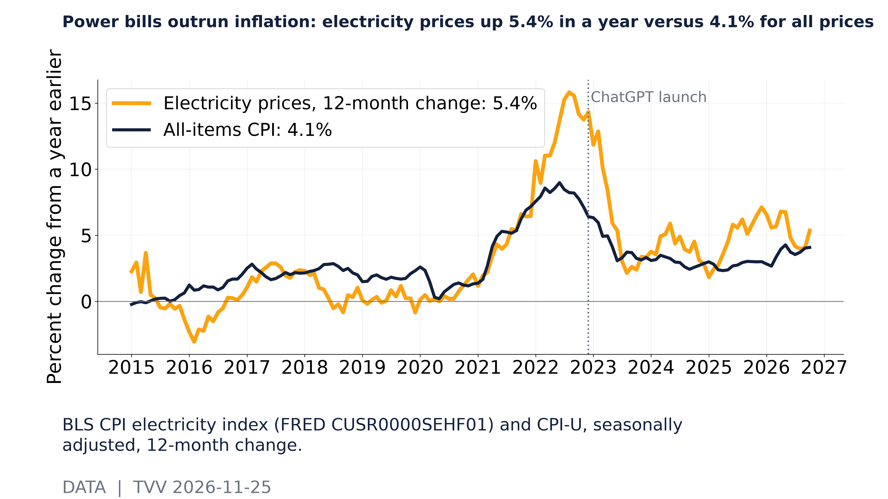
Power bills outrun inflation: electricity prices up 5.4% in a year versus 4.1% for all prices. BLS CPI electricity index (FRED CUSR0000SEHF01) and CPI-U, seasonally adjusted, 12-month change. [Data; data as of 2026-10] Source: fred.stlouisfed.org data page
6. Econo-Metrics
- ★ Hot inflation, hot growth, Fed hike all but certain: October PCE prices rose 3.8% from a year earlier and core 3.3% (core +0.29% on the month), while Q3 GDP was revised up to 4.3% from 3.4%, the fastest quarter since Q3 2023 (BEA, CNBC). Initial jobless claims fell to 189,000, the lowest since July, against 200,000 expected; continuing claims 1.697 million (Reuters, investingLive). After the data, CME FedWatch put a 25 bp hike at the Dec 8-9 meeting at 97.8% (FXBus). Kalshi had 89% on a 0.3% core reading before the release, and the November modal outcome is 0.3% at 36% (see graph); near term, markets expect a hike and sticky core inflation. CNBC · BEA · Reuters · FXBus · Kalshi
- ★ New tariff wave: USTR Jamieson Greer proposed Section 301 tariffs on 14 economies over structural manufacturing overcapacity: China up to 20% (40% if the US-China truce fails), Vietnam up to 35% (20% with an agreement), India up to 25%, the EU 15% and several Asian economies 15-20%; Mexico and Norway were excluded. Public comments and hearings come before any duties (USTR, Reuters). Bloomberg says the plans reinforced rate-hike bets. USTR · Reuters · Bloomberg
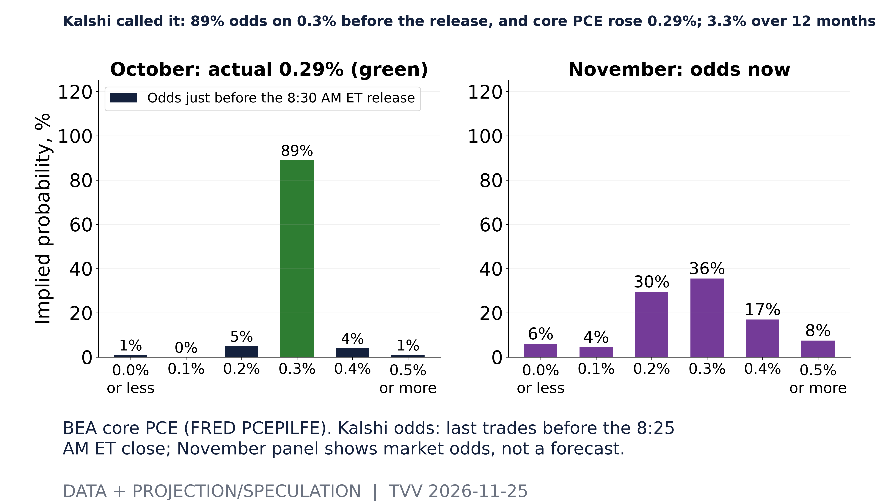
Kalshi called it: 89% odds on 0.3% before the release, and core PCE rose 0.29%; 3.3% over 12 months. BEA core PCE (FRED PCEPILFE). Kalshi odds: last trades before the 8:25 AM ET close; November panel shows market odds, not a forecast. [Data + Projection/Speculation; data as of 2026-11-25 10:40 ET] Source: kalshi.com data page
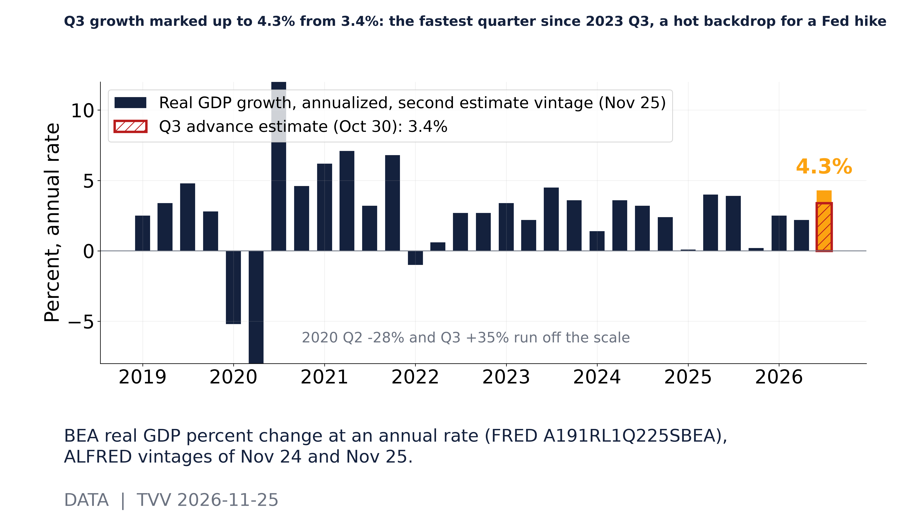
Q3 growth marked up to 4.3% from 3.4%: the fastest quarter since 2023 Q3, a hot backdrop for a Fed hike. BEA real GDP percent change at an annual rate (FRED A191RL1Q225SBEA), ALFRED vintages of Nov 24 and Nov 25. [Data; data as of 2026-11-25] Source: alfred.stlouisfed.org data page
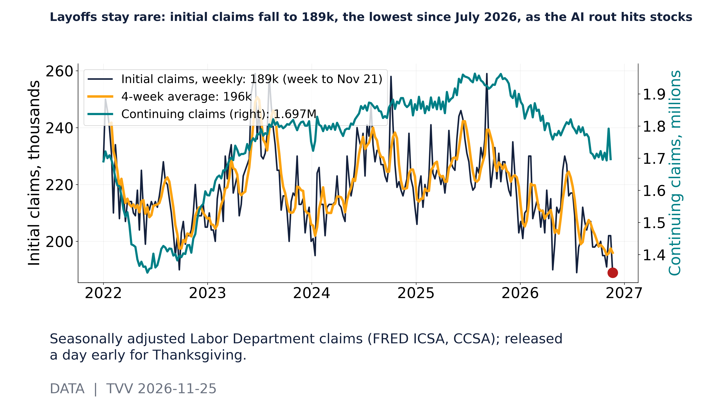
Layoffs stay rare: initial claims fall to 189k, the lowest since July 2026, as the AI rout hits stocks. Seasonally adjusted Labor Department claims (FRED ICSA, CCSA); released a day early for Thanksgiving. [Data; data as of 2026-11-21] Source: fred.stlouisfed.org data page
7. Epidemic / Bio-Metrics
- ★ Ebola at nearly 12,000 confirmed cases: DR Congo reported 11,955 confirmed Bundibugyo-virus cases and 5,867 deaths as of Nov 23; Ituri remains the epicenter with 8,114 cases, 3,832 deaths (47.2% fatality) and 34 new cases that day (Ebola Tracker SitRep 193; WHO had 11,613 cases on Nov 17). Reuters reports families in an Ebola-hit city cannot locate relatives' bodies, and UNICEF says nearly 6 in 10 women and girls surveyed in Ituri report more violence and abuse. A Nature study finds existing Ebola antibody products cross-neutralize the 2026 Bundibugyo glycoprotein. Ebola Tracker · WHO · Reuters · UNICEF · Nature
- ★ Flu early, measles spreading: clinical-lab flu positivity reached 11.8% in week 45, second only to 2022-23 at this point in the season (CDC, see graph); near term, the three-week projection rises through Thanksgiving travel, labeled as a projection from the recent trend. Pennsylvania's measles outbreak reached 1,638 cases in 46 counties with 330 hospitalizations and a ninth death (Pennsylvania Department of Health), and Virginia recorded its first death (Fierce Healthcare). CDC FluView · Pennsylvania Department of Health · Fierce Healthcare
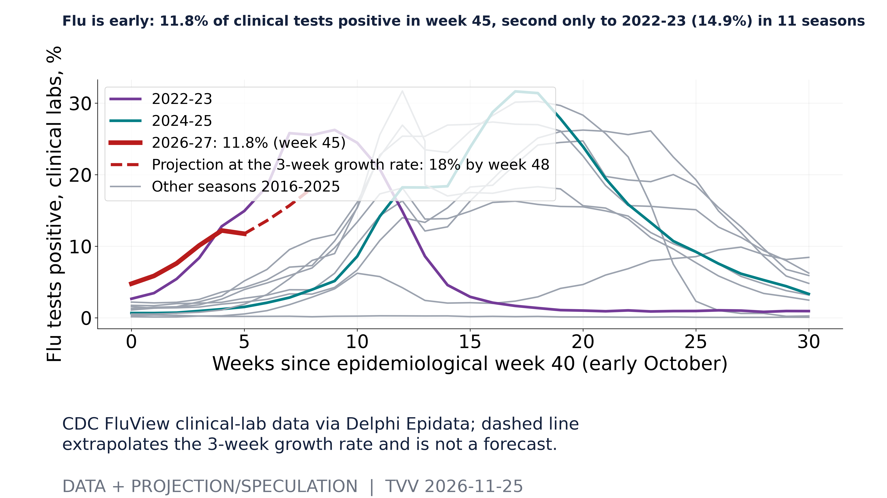
Flu is early: 11.8% of clinical tests positive in week 45, second only to 2022-23 (14.9%) in 11 seasons. CDC FluView clinical-lab data via Delphi Epidata; dashed line extrapolates the 3-week growth rate and is not a forecast. [Data + Projection/Speculation; data as of 2026-11-20] Source: cdc.gov data page
8. Gold and Silver and Commodities
- ★ Metals rout on hike bets: gold sank to a more-than-one-year low after the inflation data (CNBC), below $3,500 for the first time since 2025, at about $3,464 (-3.5%), while silver crashed through $40 (BullionVault), about 66% below its January high and -6.3% on the day (see graph); copper slumped with the AI trade though physical supply remains tight (WSJ, Reuters Breakingviews). In India, the gold drop triggered margin calls on gold loans at banks and NBFCs (Livemint). CNBC · BullionVault · WSJ · Reuters · Livemint
- ★ Oil pulled both ways: Brent rose about 2.4% to near $93.60 and WTI to $83.51 after Yemen's Houthis claimed an attack on Saudi Arabia's Ras Tanura refinery; Saudi defenses said they downed four drones, smoke was seen, and no loss of refining or export capacity is confirmed (OilPrice.com, The National). The WSJ instead reports oil falling on surplus fears, so direction is conflicting by source and hour. The Houthi claim is unverified. Thanksgiving-week gasoline averaged $3.64, the second-highest nominal level since 1991 (EIA, see graph), and ABC reports some experts see gas staying above $4 in parts of the country. Cattle markets pushed higher despite the stock turmoil (Beef Magazine). OilPrice.com · The National · WSJ · EIA · Beef Magazine
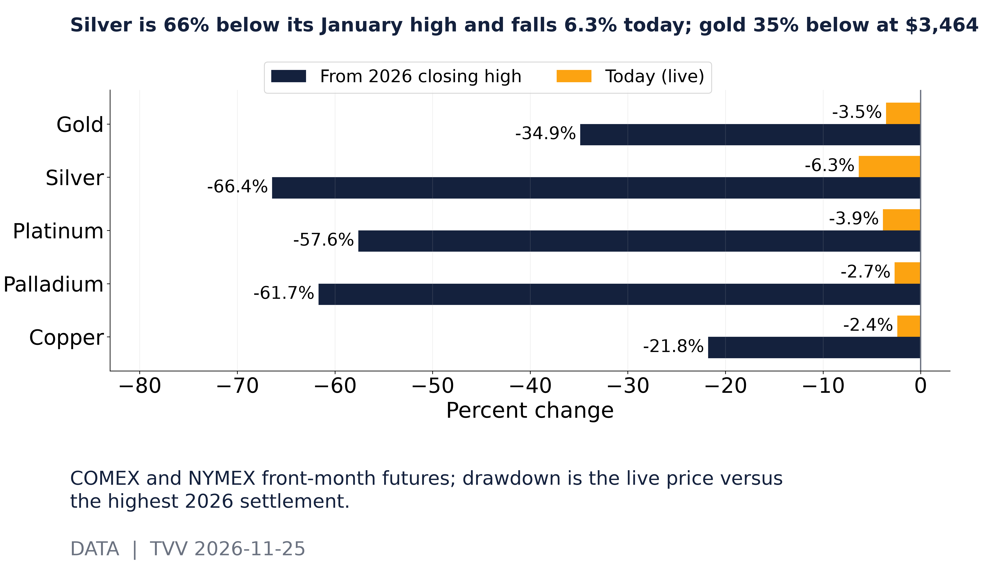
Silver is 66% below its January high and falls 6.3% today; gold 35% below at $3,464. COMEX and NYMEX front-month futures; drawdown is the live price versus the highest 2026 settlement. [Data; data as of 2026-11-25 10:16 ET] Source: finance.yahoo.com data page
: fred.stlouisfed.org data page
9. Stock Averages and Nasdaq Major Movers
- ★ Thanksgiving-eve rout: by late morning the Nasdaq was down about 4.1%, the S&P 500 about 2.9% and the Dow nearly 2%, with Nvidia down about 8% to $142.88, on the AI sell-off, hotter inflation and the new tariff proposals (Reuters). At 10:26 AM ET the Nasdaq's -4.05% matched the record Thanksgiving-eve loss of -4.04% in 2000 (see graph); whether it is a record depends on the close. Yahoo Finance says the Nasdaq 100 is on pace to enter a bear market, and Bloomberg reports a rush to Treasuries. Reuters · Yahoo Finance · Bloomberg
- ★ Anthropic sinks further below its IPO price: Reuters says the shares, below the $83 IPO price, are on track to lose nearly $200 billion in value, and Yahoo Finance reports a further slide Wednesday, while Fortune quotes Wall Street analysts calling the stock "a steal" and a "generational opportunity." Barron's says SpaceX stock has an Anthropic problem. Peter Thiel bought $122 million of Palantir shares amid the turmoil (Forbes), while Palantir executives sold $146.7 million of stock in four trading days (FourWeekMBA). Reuters · Yahoo Finance · Fortune · Barron's · Forbes · FourWeekMBA
- ★ Volatility clusters: Nasdaq days with moves of 3% or more are piling up in 2026, but the count remains far below 2000 and 2008 (see graph). The 10-year Treasury yield slid as investors bought bonds for protection (CNBC). Nasdaq via Yahoo Finance · CNBC
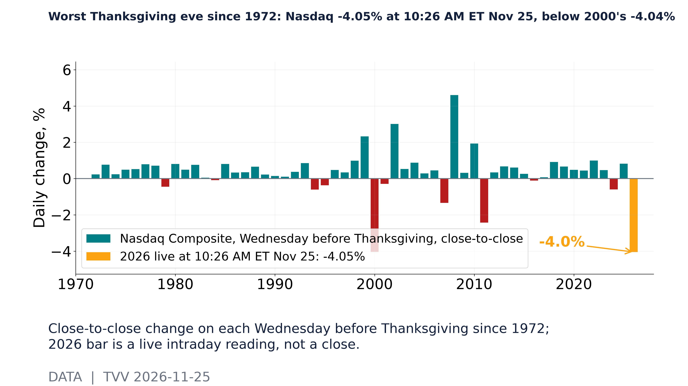
Worst Thanksgiving eve since 1972: Nasdaq -4.05% at 10:26 AM ET Nov 25, below 2000's -4.04%. Close-to-close change on each Wednesday before Thanksgiving since 1972; 2026 bar is a live intraday reading, not a close. [Data; data as of 2026-11-25 10:26 ET] Source: finance.yahoo.com data page
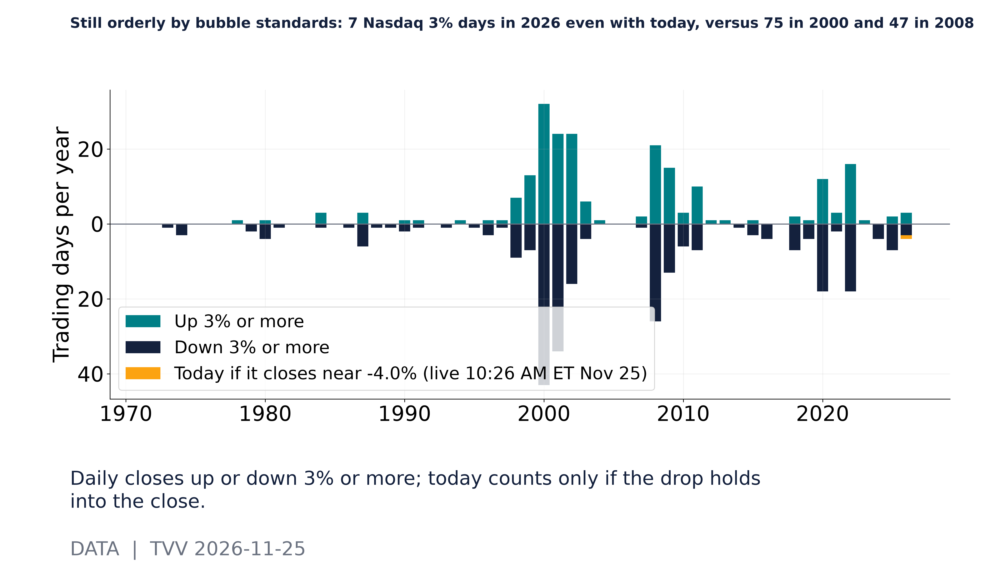
Still orderly by bubble standards: 7 Nasdaq 3% days in 2026 even with today, versus 75 in 2000 and 47 in 2008. Daily closes up or down 3% or more; today counts only if the drop holds into the close. [Data; data as of 2026-11-25 10:26 ET] Source: finance.yahoo.com data page
10. Polymarket and Kalshi Sentiment Highlights
- ★ Inflation odds stay calm: CPI is running 4.08% year over year, yet Polymarket gives only 2.8% odds that 2026 inflation tops 4.5% (see graph); near term, bettors see no inflation breakout despite the hot PCE report. CME odds of a December hike are 97.8%, with 58.4% odds of 50 bp of cumulative hikes by January (FXBus). Polymarket · FXBus
- ★ Prediction markets under legal fire: Utah dropped criminal charges against Kalshi and its founders after the company halted trading in the state (CNBC, AP), and a federal judge ordered Kalshi to stop allowing sports betting on some New Mexico tribal lands (Source New Mexico). CNBC · Source New Mexico
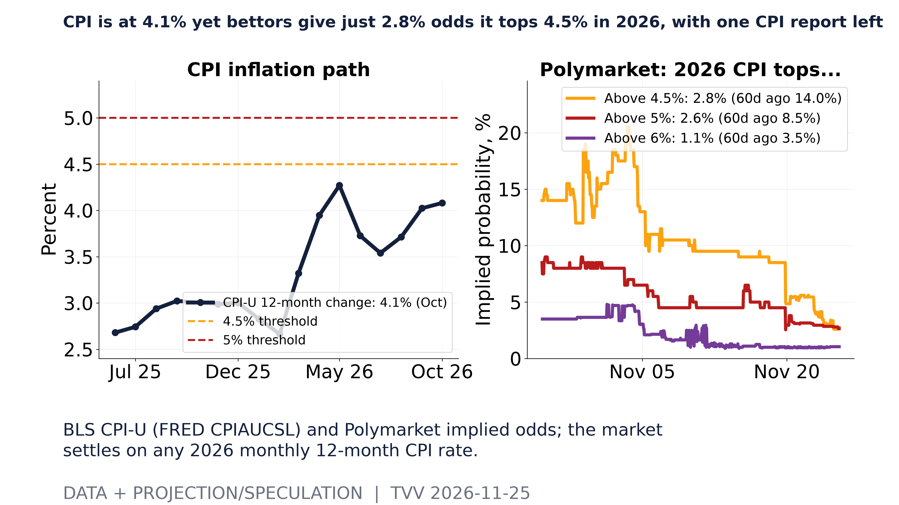
CPI is at 4.1% yet bettors give just 2.8% odds it tops 4.5% in 2026, with one CPI report left. BLS CPI-U (FRED CPIAUCSL) and Polymarket implied odds; the market settles on any 2026 monthly 12-month CPI rate. [Data + Projection/Speculation; data as of 2026-11-25 10:40 ET] Source: polymarket.com data page
11. Tech-Metrics
- ★ Nvidia down 40% from its peak: Nvidia at about $143 is 40% below its Oct 6 high after 36 trading days, a faster drop than in 2000, 2008 or 2022 and slower only than 2018 (see graph). Polymarket odds that it touches $136 by Nov 30 rose to 57% from 26% a week ago (see graph); near term, bettors expect more downside this week. Barron's says "Jensen was not the only problem," and 24/7 Wall St. reports Nvidia's top lawyer sold $4.5 million of shares the day before its 14% plunge. Barron's · 24/7 Wall St. · Polymarket
- ★ Trump floats a US stake in Nvidia: Trump told the New York Post it is "probably not too late" for a government equity stake like the 2025 Intel deal, without a size, price or plan; 24/7 Wall St. calculates a 10% stake would be worth about $375 billion. He said a pardon for Jensen Huang is "always an option" but not likely needed and urged him not to plead the Fifth when he meets the House Foreign Affairs Committee on Dec 1 and the Senate Banking Committee on Dec 3. CBS reports on Trump's effort to reinstate Huang, and the BBC says the attorney general dodged questions about the Nvidia investigation. New York Post · 24/7 Wall St. · CBS News · BBC
- ★ Microsoft's "Code Red": internal memos reviewed by Reuters show Microsoft declared a Code Red after the Nov 12-13 outage, the most customer-impacting incident in Exchange Online history; responders traded more than 11,000 messages across 11 Teams chats in a "fog of war," and one urgent fix took five to six days to reach worldwide saturation. Microsoft now targets one-hour worldwide resolution and plans AI agents for diagnosis (Reuters, Ars Technica). Reuters via Investing.com · Ars Technica
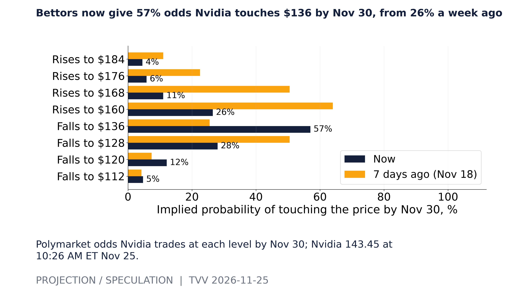
Bettors now give 57% odds Nvidia touches $136 by Nov 30, from 26% a week ago. Polymarket odds Nvidia trades at each level by Nov 30; Nvidia 143.45 at 10:26 AM ET Nov 25. [Projection/Speculation; data as of 2026-11-25 10:40 ET] Source: polymarket.com data page
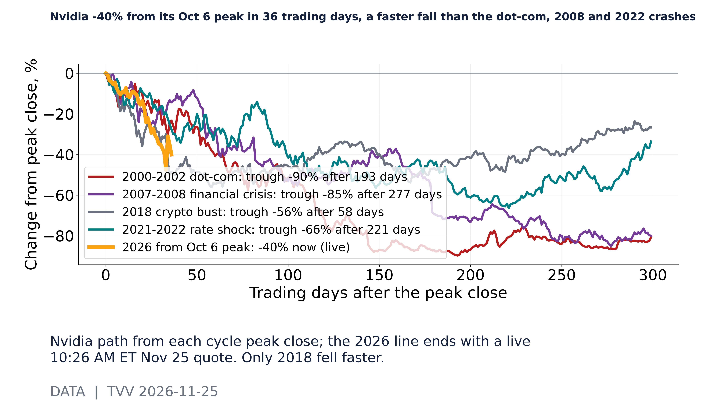
Nvidia -40% from its Oct 6 peak in 36 trading days, a faster fall than the dot-com, 2008 and 2022 crashes. Nvidia path from each cycle peak close; the 2026 line ends with a live 10:26 AM ET Nov 25 quote. Only 2018 fell faster. [Data; data as of 2026-11-25 10:26 ET] Source: finance.yahoo.com data page
12. AI Hypergrowth Risks
- ★ AI that nobody checks: the IAPP asks what recent system outages mean for AI governance when nobody checks the work, and Futurism notes Microsoft plans to deploy more AI agents after its outage. The Guardian reports Meta insiders say the push to AI content moderation has "been really a mess." Parametrix placed AI downtime insurance with limits up to $10 million (Program Business), and Webull lets outside AI agents trade without saying how much they handle (AIM Media House). IAPP · Futurism · The Guardian · Program Business · AIM Media House
- ★ AI and jobs: Indeed software-development postings stand at 81.7 (Feb 2020 = 100) versus 106.2 for all postings, so coders stay below pre-pandemic as AI spreads (see graph). GM is using robots to build cars faster (Detroit Free Press), a Tennessee district plans to swap a trade school for data science (Chalkbeat), and companies from Micron to Anthropic are spending millions protecting CEOs as AI threats rise (Invezz). Polymarket's December GPU rental markets imply medians of $3.02 an hour for the H100, $9.08 for the B200 and $11.39 for the B300 (see graph); near term, bettors expect rental prices to hold despite the AI stock rout. Indeed Hiring Lab · Detroit Free Press · Chalkbeat · Invezz · Polymarket
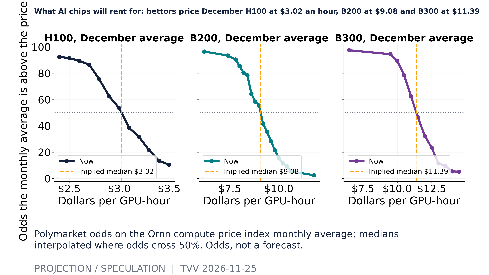
What AI chips will rent for: bettors price December H100 at $3.02 an hour, B200 at $9.08 and B300 at $11.39. Polymarket odds on the Ornn compute price index monthly average; medians interpolated where odds cross 50%. Odds, not a forecast. [Projection/Speculation; data as of 2026-11-25 10:40 ET] Source: polymarket.com data page
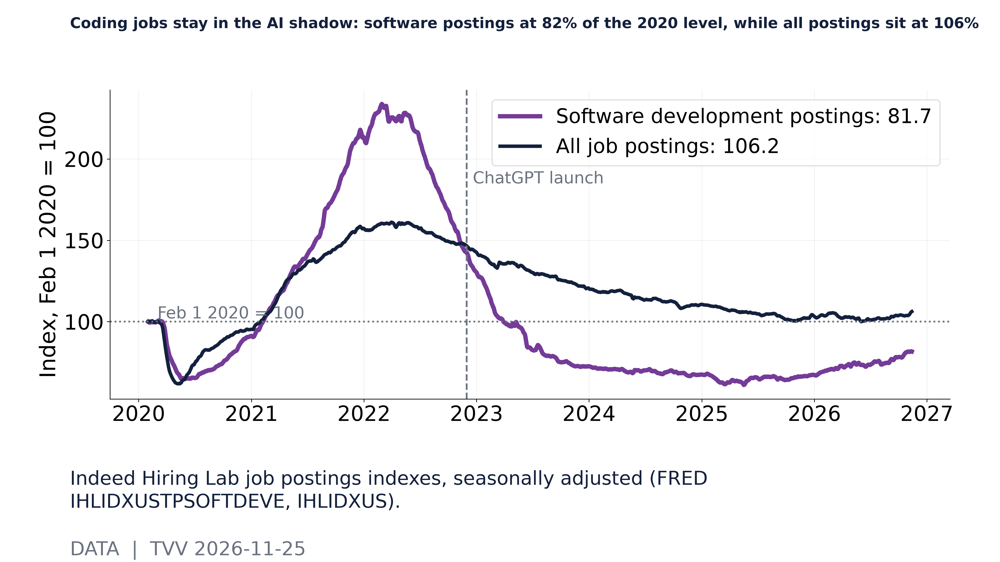
Coding jobs stay in the AI shadow: software postings at 82% of the 2020 level, while all postings sit at 106%. Indeed Hiring Lab job postings indexes, seasonally adjusted (FRED IHLIDXUSTPSOFTDEVE, IHLIDXUS). [Data; data as of 2026-11-13] Source: fred.stlouisfed.org data page
13. Finance Bubble Derivatives Risk
- ★ AI credit stress hits records: CoreWeave's 9.75% 2031 bond yield topped 17% and its five-year CDS rose above 1,200 bp, with S&P Global data implying a 68% chance of default within five years; one 2031 bond fell to 76.6 cents. Five-year CDS for Oracle (about 356 bp), Alphabet and SpaceX also hit records, and SoftBank's leapt to 501 bp, its widest since October 2022 (Reuters, Benzinga, Stock Analysis). Nvidia said it had $118 billion of guarantees for AI projects as of Oct 25, and Man Group finds Microsoft, Amazon, Meta and Alphabet on track to spend more on capital projects than they generate in cash in 2026 and 2027 (The Next Web). Reuters Breakingviews calls banks the canary in the data-center debt mine. Reuters via Investing.com · Benzinga · Stock Analysis · The Next Web · Reuters Breakingviews
- ★ Crypto leverage unwinds: US spot Bitcoin ETFs logged about $4.94 billion of November outflows, the worst month since their January 2024 launch, with BlackRock's IBIT about 84% of it (Cointelegraph, OnChainBeat); Bitcoin slid below $57,500 as the Nasdaq sank at the open (Bitcoin Magazine). Bitcoin is 53% below its high, Strategy 84% and QQQ 20% (see graph); near term, the leveraged crypto proxies are falling fastest. Cointelegraph · OnChainBeat · Bitcoin Magazine
- ★ Private credit drawdowns: Blue Owl is 67% below its high and business development companies 32%, against 6% for high-yield bonds (HYG) (see graph). The FT reports banks regaining ground from private credit, SEC commissioner nominees diverged on private-credit risk (Pensions & Investments), and The Nation argues Congress's permitting bill doubles as an AI bailout. Yahoo Finance · Financial Times · Pensions & Investments · The Nation
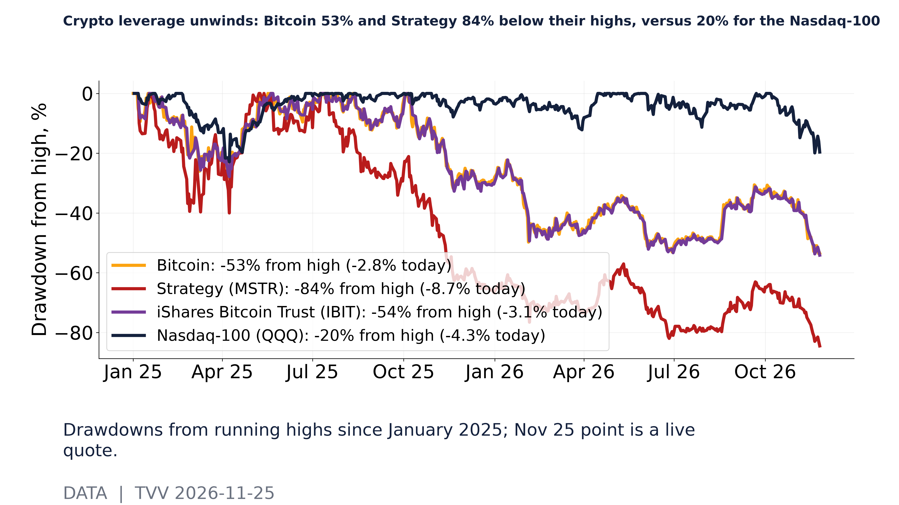
Crypto leverage unwinds: Bitcoin 53% and Strategy 84% below their highs, versus 20% for the Nasdaq-100. Drawdowns from running highs since January 2025; Nov 25 point is a live quote. [Data; data as of 2026-11-25 10:40 ET] Source: finance.yahoo.com data page
Prioritized Risk Summary November 25, 2026
| Sections Ranked for Importance Today | |
|---|---|
| STOCKS | Nasdaq falls about 4%, matching its record Thanksgiving-eve loss; S&P 500 down 2.9% |
| DERIVATIVES | AI credit stress at records: CoreWeave bond tops 17%; Oracle, Alphabet CDS highs |
| ECONOMY | Core PCE 3.3%, GDP revised to 4.3%; December Fed hike odds at 97.8% |
| TECHNOLOGY | Nvidia 40% below its peak; Trump floats a US stake and keeps a Huang pardon open |
| GEOPOLITICS | US tells Americans to leave Iran now; Poland asks NATO to down Russian missiles |
| TERROR | Bombed towers black out southern Colombia; CIA and FinCEN systems breached |
| HEALTH | Ebola tops 11,900 confirmed cases; early flu season at 11.8% positivity |
| COMMODITY | Gold below $3,500, silver below $40; Houthis claim attack on Ras Tanura |
| AI BOOST | Microsoft outage review calls for more AI agents; Meta AI moderation a mess |
| PREDICTIONS | Bettors see 73.5% odds of an Iran ceasefire pause but no end to the blockade |
| INFRASTRUCT | Electricity prices up 5.4% in a year; storms threaten Thanksgiving travel |
| SPACE | Possible G1 storm on Thanksgiving; October sunspots far below NOAA forecast |
| QUAKES | No deadly M6+ quake; Indonesia's M5+ count nearly doubled in a year |
TECHVESTVENTURES ACTION-ALERT — November 25, 2026 see all graphs click TVV Risk Center
EDITOR — Michael Hentschel
Most news events require or spawn no action or reaction, some (but not many) are or become warnings. We draw attention to substantial lifestyle risks and market risks in particular, some created by Mid-Term Vote anxieties, Middle East tensions, vast over-indebtedness globally, and other events we track. Longer term but capable of causing sudden power surges as serious as the Carrington Event. Climate instability occasioned by long-term cyclical solar electro-magnetic flares, is becoming much more prominent and even more likely. New AI predictive analytics and pattern seekers are pointed in some of these directions, and we monitor imminent likelihood. Some readers might hedge and others might see opportunity. The above is not investment advice.